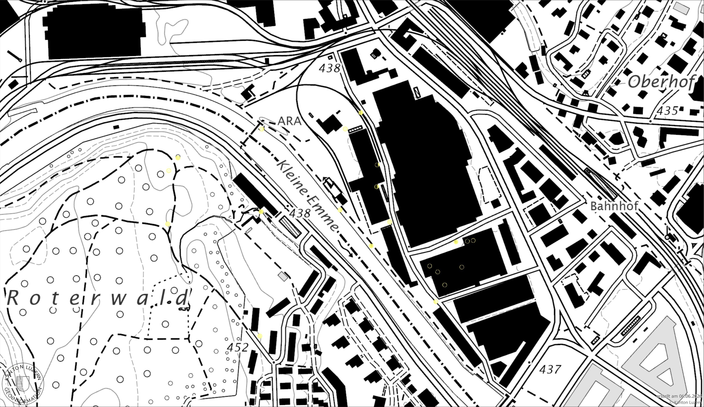

ume sein, in dem, was ume ist, war Idee dieses Projekts. Meinen Live-Standort hätte ich geteilt, um auffindbar zu sein.
Ich sprach mit Marina. Dabei realisierten wir, dass dieses Vorhaben für die stark programmgefüllten Ausstellungstage nicht geeignet wäre. Marina sagte, ich könnte Orte auf dem Areal fotografieren und diese Fotos vor Ort ausstellen. Ich ging dem nach.
Ich sprach mit Oli. Oli sagte, es könnten auch Markierungen der Standorte sein. Markierungen, die eine Aussichtsposition auf das Vorhandene definieren. Ich ging dem nach.
Ich sprach mit Simon. Simon sagte, Markierungen im Raum wären ein zu starker Eingriff angesichts meiner Auseinandersetzung mit dem Nicht-Eingreifen. Wir sprachen über digitale Alternativen. Ich ging dem nach.
Ich ging auf dem Areal umher und trug Orte in eine digitale Karte ein. Dabei traf ich Sania. Wir zeigten uns gegenseitig, woran wir gerade arbeiteten. Sania fragte, weshalb ich nicht etwas Eigenes mache, das ich auch in Zukunft nutzen könnte. Wie eine Webseite. Mir kam in den Sinn, dass ich noch Budget hatte.
So entstand diese Webseite. Das restliche Budget der Hochschule reichte für zehn Jahre Domain. Diese Webseite dient somit bis 2036 der Vermittlung von ume.
